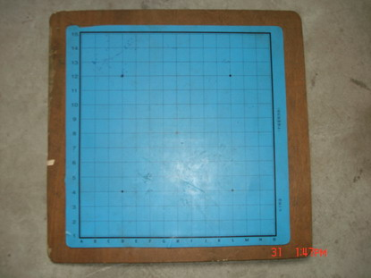
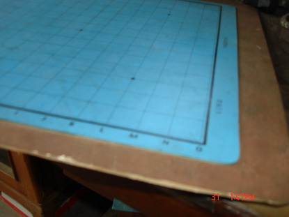

教你如何自制五子棋棋盘
#1 教你如何自制五子棋棋盘作者：有志青年 发表时间：2007-7-31 10:30:17
很多朋友有这样的感受，棋子倒是容易得到，棋盘却不那么容易，思来想去只有三种途径了：
1、邮购，网上却不太容易找到商家
2、自制，用什么材料，怎么制，如何避免磨花
3、买塑料五子棋纸，这个商店倒是有的卖，可总觉得不上档次
大家出出主意，如何自制棋盘，您只要给出方法，试验成功的最好，仅仅是想法的也可以发出来，人多主意多，总会有合适的。
#2 方法1：纸制作者：有志青年 发表时间：2007-7-31 10:47:00
材料：硬纸[卡纸、白板纸……]、记号笔、尺、刀、保护液
效果：未实验，仅推测，一般。
制作过程：
1、用硬纸裁剪棋盘，约39cm
2、用记号笔在硬纸上画格线，每格间距2.5CM，边框各空1CM
3、此时基本可以使用了，但是多次使用后会磨花用记号笔画上的线条
我们可以用木匠用的乳胶漆和水[1:10]，然后用喷雾器均匀的喷洒在棋盘表面，等自然晾干之后就形成了一层保护膜【当时画素描、速写就是这么操作的】
也可以用透明胶布在棋盘表面粘贴
#3 方法二：木制作者：有志青年 发表时间：2007-7-31 10:49:46
材料：指接板[木工板]、记号笔、尺、清漆
规格：每格间距2.5CM，方便大棋子，边框各空1CM，标注坐标
效果：见南通五子棋自制的棋盘，棋盘的切割和最后的清漆需要专业的木匠师傅操作，南通的清漆刷了大约三遍
2006-6-15 的结果，纯手工打造！

［此帖子已被 有志青年 在 2012-2-11 20:38:33 编辑过］
#4 方法三：塑料纸加底作者：小丸.net 发表时间：2007-7-31 10:50:10
1.到商店买一张塑料五子棋纸，最好是厚的那一种，不透明的。
2.到装修的人家去弄一块与该五子棋纸稍大一圈的三夹板或者木工板，并请木工师傅把边打平，回来用700目以上木纱纸将边磨毛，防止木剌扎手。
3.用双面胶带将塑料五子棋纸全面贴在三夹板上
4.使用宽的双面胶带将整块板贴住，这样一块防水棋盘就搞定了。
该法已经经过本人花去半张三夹板和二张创口贴的代价实践出来的。。。。
特点：低价，整个棋盘花不了3块钱，防水：棋盘脏了可用水洗。你可以在DIY中获得乐趣。


#5 方法四：磁性五子棋作者：有志青年 发表时间：2007-7-31 10:51:01
详情见
#6 方法五：磨砂玻璃棋盘作者：有志青年 发表时间：2007-8-2 15:25:01
材料：一张塑料纸棋盘，交给玻璃店做样图
效果：想法，没有实践
制作方法：到玻璃店里定制一块玻璃，玻璃上刻着棋盘，费用可能较高，但将它做成一个小茶几，放在家中应该还是不错的。
#7 方法七：棋墩作者：有志青年 发表时间：2007-8-3 12:23:42
材料：家装材料大芯板、圣象木地板、胶和射钉枪
效果：圣象木地板很硬的面，用多少年也不会有磨损，已投入使用。
制作者：励精
制作过程：
家装修后，用多余的材料两层大芯板粘在一起，上面再粘一层拼接圣象木地板，够厚了吧？ 然后用胶和射钉枪把包边做好，打光，上漆，加底脚。用漆笔画线，绝对磨不掉，价格便宜很实用。
#8 专业木质棋盘制作流程作者：有志青年 发表时间：2007-8-4 10:38:44
本站相关介绍：专业木质棋盘制作流程